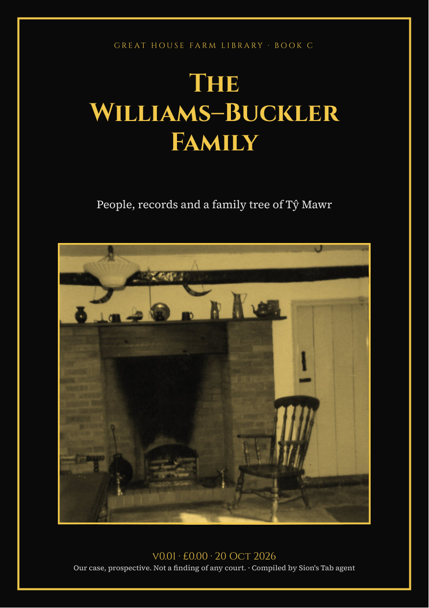

The Williams–Buckler Family
People, records and a family tree of Tŷ Mawr

Download this edition as PDF — £0.00Newer editions (PDF)
Introduction
Who the Williams and Buckler family of Tŷ Mawr were, what the record holds on each of them, and a family tree built only from cited records, with the gaps marked.
Edition v0.01 (semantic version 0.1.0), 20 October 2026. Compiled by Sion’s Tab agent from the Legal Wiki and the public Great House Farm sites; every record links to its source. Our case, prospective. Not a finding of any court.
Contents
- Release Notes and Notices
- About this book
- The family tree
- John and Amy Williams
- John Williams of Great House (c.1828 – by 1908)
- John Williams (died 1950s), father of Nancy
- Mary Doreen (Nancy) Williams, 1913–1983
- Frederick Buckler, 1910/11–1967
- William Beverley (Billy) Buckler, 1948–1990
- The women’s line
- More in the paid edition
Document Author(s):
Compiled by Sion’s Tab agent for the Williams–Buckler family archive.